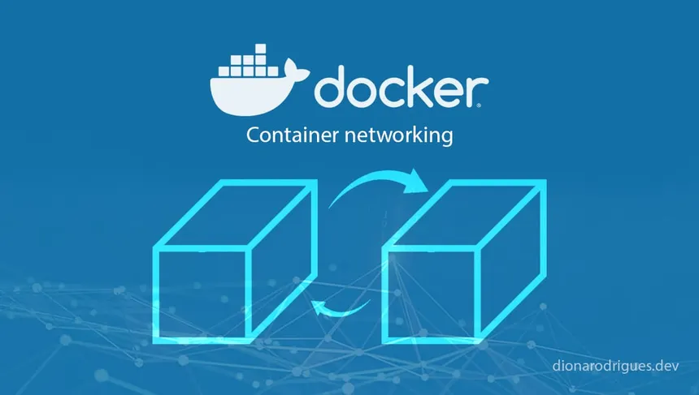

Docker Networking
Visão geral do sistema de redes no Docker
O Docker possui uma arquitetura de rede própria, projetada para facilitar a comunicação entre containers, entre containers e o host, e até mesmo entre containers em diferentes hosts físicos. A camada de rede do Docker é implementada através de um sistema modular com múltiplos drivers de rede, que abstraem a complexidade do sistema operacional subjacente.
Internamente, o Docker utiliza as APIs de rede do kernel do Linux (ex: namespaces de rede, iptables, bridges virtuais, veth pairs) para isolar, rotear e manipular o tráfego entre os containers. Todos os containers compartilham o kernel do host, mas têm suas interfaces de rede virtualizadas e controladas pelo Docker daemon.
Bridge Network
Por padrão, quando você instala o Docker, é criada automaticamente uma rede chamada "bridge". Ela funciona como uma ponte virtual, onde todos os containers conectados podem se comunicar entre si. A comunicação externa só é permitida se você expuser portas usando o parâmetro `-p` ou `--publish` ao criar o container.
O Docker cria interfaces virtuais chamadas "veth pairs" para conectar o namespace de rede de cada container à bridge no host. O roteamento e as regras de firewall (via iptables) são gerenciados automaticamente pelo Docker para controlar o tráfego de entrada e saída.
Host Network
No modo Host Network, o container compartilha diretamente o namespace de rede do host. Isso significa que o container usa a mesma interface de rede e o mesmo endereço IP do sistema operacional hospedeiro. Esse modo elimina a sobrecarga de virtualização da rede, sendo útil para aplicações que exigem alta performance de rede ou muitas portas abertas.
Overlay Network
A Overlay Network permite que containers em hosts diferentes se comuniquem de forma segura, como se estivessem na mesma rede local. O Docker cria um túnel VXLAN entre os hosts envolvidos, encapsulando os pacotes de rede.
Esse tipo de rede é amplamente usado em orquestradores como o Docker Swarm. Ela facilita a criação de clusters, com balanceamento de carga embutido através de serviços virtuais que rodam sobre a Overlay Network.
None Network
Ao escolher o driver "none", o container não terá nenhuma configuração de rede inicial. Isso é útil quando o usuário deseja criar uma configuração de rede personalizada ou realizar testes de isolamento extremo.
Gerenciamento e manipulação de redes no Docker
O Docker fornece uma CLI poderosa para criação, inspeção e remoção de redes. Com o comando `docker network create`, é possível criar redes customizadas, definindo o driver de rede desejado (ex: bridge, overlay, macvlan). Com `docker network ls`, você pode listar todas as redes disponíveis, e com `docker network inspect`, visualizar a configuração detalhada de qualquer rede.
Internamente, o Docker armazena as informações de rede em seu próprio banco de dados de estado (gerenciado pelo Docker daemon). O roteamento, as interfaces e as regras de iptables são atualizados dinamicamente conforme containers são conectados ou desconectados das redes.
Resumo dos tipos de rede no Docker
- Bridge: Rede padrão, containers se comunicam entre si via NAT.
- Host: Container compartilha a rede do host.
- Overlay: Comunicação entre containers em hosts diferentes.
- None: Container sem rede, isolado.